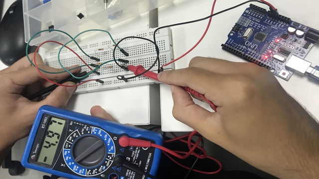
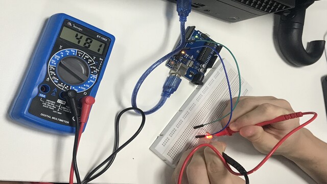
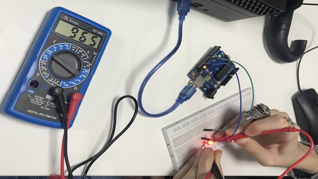
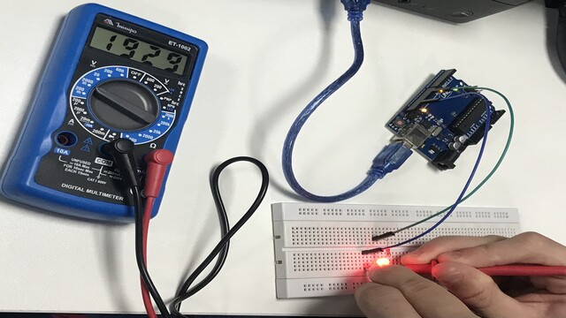
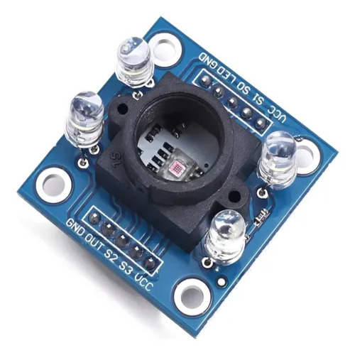
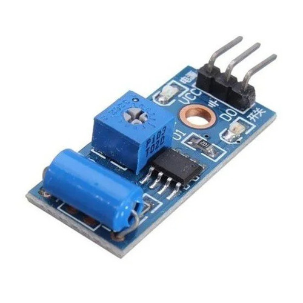
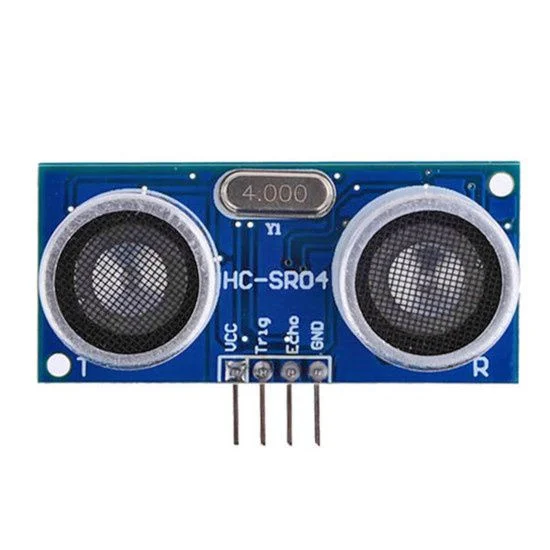
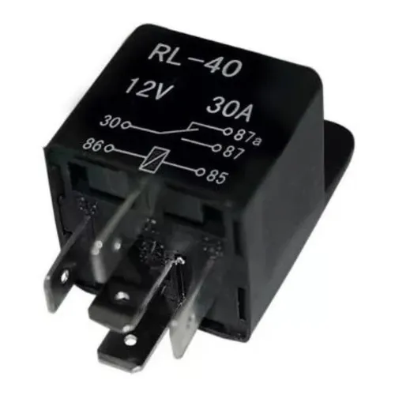
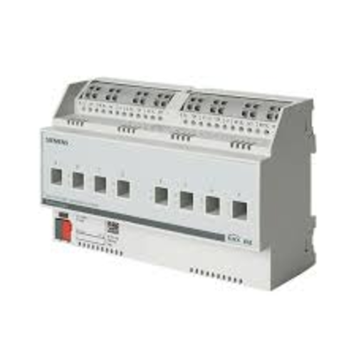

Projetos
Vídeos e fotos de alguns projetos utilizando arduino feitos no Senai em Eletrônica Aplicada à Sistemas de Automação e TI.
Vídeos e fotos de alguns projetos utilizando arduino feitos no Senai em Eletrônica Aplicada à Sistemas de Automação e TI.
Além de vídeos e fotos, foram respondidas algumas questões sobre sensores, dimerização, entre outros.
Ligações de projetos usando arduino fisicamente.
Protótipo usando arduino em projetos no tikercad.
Circuito Físico no aruduino, sensor Ultrassônico com Led e com Display 7 Segmentos.
Circuito Tinkercad sensor Ultrassônico com Led e com Display 7 Segmentos.

A Ponte de Wheatstone é um circuito usado para medir resistências elétricas com precisão.

63

127

255

Um sensor de cor é um dispositivo que identifica a cor de um objeto.

Um sensor de vibração é um dispositivo que detecta movimentos ou tremores.

Um sensor ultrassônico é um dispositivo que mede distâncias usando ondas sonoras.

Ele muda sua resistência conforme a intensidade da luz que recebe.
Dimerização é um processo em que duas moléculas iguais se unem para formar uma nova estrutura chamada dímero. Isso acontece por meio de ligações químicas entre as moléculas. Esse processo pode ocorrer em substâncias da química e também em sistemas biológicos. A dimerização pode mudar as propriedades da substância, como sua estabilidade ou reatividade. De forma simples: duas moléculas se juntam e passam a agir como uma unidade.
Medida de continuidade é uma forma de verificar se algo continua funcionando ou ligado sem interrupção. Ela é muito usada em eletricidade para testar fios e circuitos. Quando há continuidade, significa que a corrente elétrica pode passar pelo caminho. Se não houver continuidade, quer dizer que há uma quebra ou problema no circuito. Em resumo: serve para ver se a ligação está completa e funcionando.
A saída analógica PWM do Arduino é uma forma de simular um sinal analógico usando um sinal digital. O PWM significa Modulação por Largura de Pulso.Ele funciona ligando e desligando o pino muito rápido, variando o tempo em que fica ligado. Assim, é possível controlar intensidade, como brilho de LED ou velocidade de motor.
O CLP CPU 1214C (DC/DC/DC) é um controlador programável usado em automação. O “DC/DC/DC” significa que a alimentação, entradas e saídas digitais usam tensão contínua (DC). Ele recebe sinais de sensores e controla atuadores como motores e lâmpadas. Serve para automatizar máquinas e processos de forma rápida e segura.
Um atuador relé é um dispositivo que recebe um sinal elétrico e liga ou desliga outro circuito. Ele funciona como um interruptor controlado eletricamente, sem necessidade de acionamento manual. É usado para controlar lâmpadas, motores ou outros equipamentos em sistemas automáticos. Em resumo: o relé atua como “mão elétrica” que liga e desliga aparelhos quando recebe um comando.

5 pinos

KNX